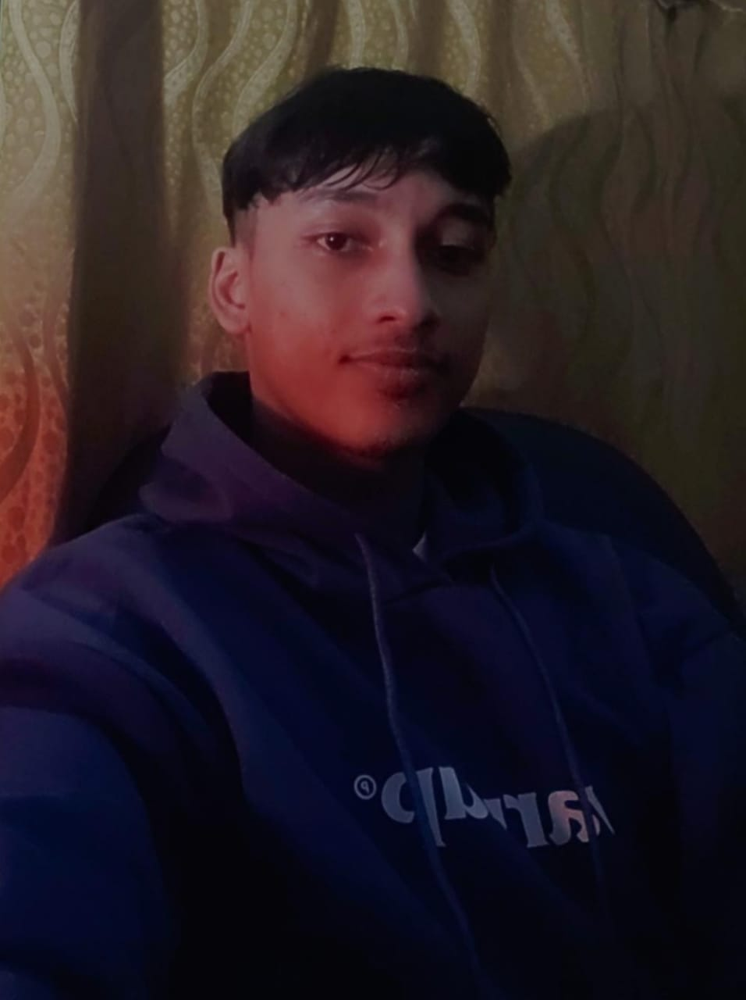
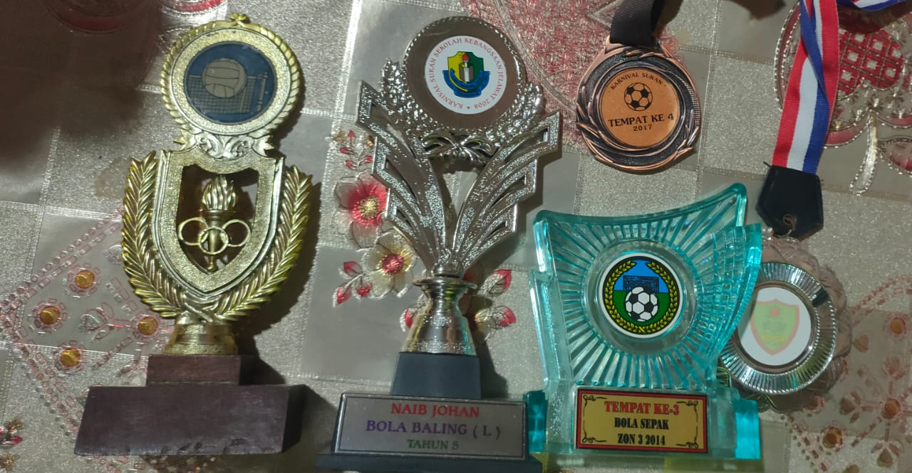
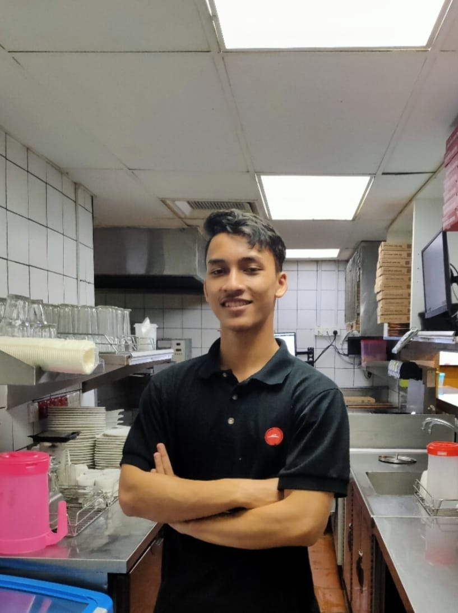

My Biodata

Name : Mohammad Firdaus Bin Ahmad Azudin
Student Id : 2020844952
Group : Kim 2443B
Course : Bachelor Of Information Science (HONS), Library MAnagment
Date Of Birth: February 17, 2000
Age : 21 Years old
Father's Name : Ahmad Azudin Bin Abdul RAshid
Mother's Name : Che Esah Binti Ismail
Sex : Male
Maritial Status : Single
Religion : Islam
Permanent Address : No 26 Kampung Teratak Pulai 16070 Bachok Kelantan
Hobbies : Futsal
Favourite Food And Drink :Chicken Rice And Sirap
Email : firdausazudin123@gmail.com
click for coverpage
My School Achievements

School Achievements
1-Second Place Handball 2011
2-Third Place In Football Zone 3 2014
3-Third Place In Netball 2015
4-Fourth Place In Football Carnival 2017
5-Third Place In Football Zone 3 2018
Working Experience

My first work experience was working as a caterer at a company owned
by my cousin. This job I did on the weekends considering that at that time I was still
in school and taking stpm. Then after i finished stpm, I work at a fast food restaurant
in Kota Bharu, Pizza Hut. At the beginning of my job there, I worked as a waitress. After
a few months of working I was asked to work in the kitchen as an aux person responsible for
preparing food other than pizza. For example pasta, lasagna salad and more. Many bitter and sweet
memories during my work there, I was also able to make many new friends. This part -time work experience
taught me a lot and matured me even more.